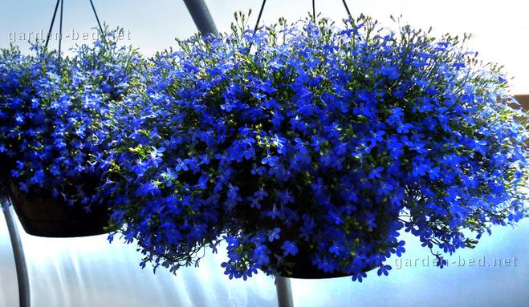
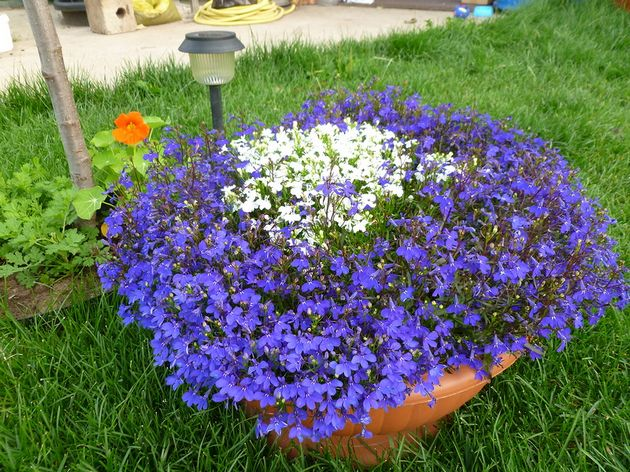

Каталог
Как юная Офелия, цветущая лобелия...
По все параметрам подходит для балкона: не
прихотлива, не пачкает, обильное, непрекращающееся цветение до
заморозка, в конце июля можно обрезать и она поднимается вновь. Это она
только начала цвести, потом будет большое многоцветное облако, состоящее
из сотен и сотен цветков, класс, как смотрятся в цветниках на открытом
пространстве. Оценка цветку: пять в кубе.
Лобелия (Lobelia) растение нежное, ажурное, нарядное. Очень долго и
непрерывно цветет, сохраняет компактность, которая великолепна как в
цветнике в качестве почвопокровника, так и в подвесных кашпо, украшающих
террасу или окна каскадами мелких цветочков всех оттенков голубого и
розового цвета. Ее цветочки немного напоминают цветки садовой герани,
только в миниатюре, и гамма расцветок – та же.

Чтобы самостоятельно вырастить рассаду лобелии вам придется немного
потрудиться, поскольку она особенно капризна именно в начале своей жизни
– в период выращивания рассады. И хотя сегодня практически не
составляет труда купить готовую рассаду на рынке или в цветочном
магазине, но куда интереснее вырастить ее самостоятельно!
Обычно сажают лобелии на рассаду в конце февраля – начале марта. Для
посадки почву насыпают в невысокую емкость. Очень хорошо для этой цели
подходят пластиковые контейнеры из-под кондитерских изделий. Их
прозрачная крышка будет служить парничком для всходов лобелии.

Семена лобелий очень мелкие, сажать их проще всего зубочисткой. Кончиком
влажной зубочистки подцепляется сразу несколько семян и переносятся на
поверхность влажной почвы. И так до тех пор, пока не засеется
приготовленная емкость.
Но вполне можно и просто равномерно рассыпать семена по поверхности.
Затем посаженные семена нужно аккуратно( чтобы не вогнать в почву)
побрызгать из пульверизатора и накрыть крышкой. Дня четыре коробочка
вполне может стоять в темном теплом месте. Обязательно нужно регулярно
проветривать семена, открывая время от времени парничок.
На пятый день уже можно разглядеть проклюнувшиеся маленькие росточки.
Теперь коробочку нужно поставить на свет в более прохладное место.
На шестой день видны малюсенькие зеленые листочки. Нужно следить за
влажностью почвы, но ни в коем случае нельзя заливать рассаду, иначе она
погибнет.
Даже если лобелия была посажена обычным способом, она будет прекрасно
расти и в тесноте.
Если есть возможность, нужно пересадить лобелии в отдельные контейнеры.
Сажать нужно не по одному растению, а сразу кучкой.
В отдельных контейнерах растения будут расти более крепкими.
Но даже если вы так и не нашли времени или места для пикировки лобелии,
расстраиваться не стоит. Лобелии можно рассаживать и в уже цветущем
состоянии. Придется только немного повозиться, распутывая длинные тонкие
стебелечки.
Рассада лобелии прекрасно приживается, и начинает еще больше плестись,
заполняя поверхность цветника яркими мелкими цветочками. Лобелия любит
влажную, не сильно удобренную почву, иначе в ущерб цветению сильно будет
разрастаться зелень.
Лобелия. Ясельная группа
Одна из основных тонкостей при уходе за всходами – это их полив.
Поскольку рассада лобелии в первые дни жизни имеет буквально
микроскопические размеры, то поливать ее лучше из шприца с иголкой.
После появления первых настоящих листочков лобелию можно пикировать в
отдельные горшочки для рассады группами по 3-5 растений, отбирая самые
крепкие и здоровые на вид. Кустовые сорта лобелий можно будет через
некоторое время прищипнуть для лучшей ветвистости, а ампели не нуждаются
в этом, они и должны иметь поникающие побеги. Лучшие условия для
дальнейшего выращивания рассады – светлый прохладный (13-17°С)
подоконник.
Проблемы ухода за рассадой лобелии
Основная проблема при выращивании лобелии – это водный режим. При
переизбытке влаги тоненькие стебельки начинают покрываться белой
плесенью, а при пересушивании листики моментально скручиваются в
трубочку.
Другая проблема – недостаток освещения. При его дефиците побеги
моментально вытягиваются. При необходимости (северный подоконник,
слишком ранние сроки посадки) рекомендуется сделать подсветку.
После того, как минует угроза возвратных заморозков, рассаду лобелии
можно высаживать в открытый грунт. Расстояние между группами растений
(напомню, что вы пикировали всходы по 3-5 штук) – 10-15 см. При
соблюдении сроков посадки семян и соответствующем уходе, лобелия
зацветает в июне и продолжает нас радовать до первых морозов.
Для выращивания лобелии выбирают солнечные или полутенистые места, почва
должна быть легкая, плодородная, достаточно увлажненная. В сильную жару
и при недостаточном поливе лобелия может прекратить цветение.
Высаживая рассаду лобелии в оконные ящики, кашпо и другие контейнеры.
Позаботьтесь о сохранении влаги в грунте. Используйте для этих целей
гидрогель или сфагнум. Поливайте лобелию дважды в день – утром и
вечером, особенно актуально для жаркого засушливого городского лета.
Для лучшего цветения лобелию можно подкормить 2-3 раза за лето. Первую
подкормку сделайте сульфатом калия, а в последующие – примените
комплексное удобрение.
Вместе навсегда
Нет, не навсегда, конечно, но на несколько лет очень даже возможно. Если
вам особенно приглянулся какой-то сорт лобелии, то вы можете продолжить
выращивание лобелии, выкопав по осени приглянувшийся кустик, пересадить
его в горшочек и сохранить до весны в новом статусе комнатного
растения. А весной, расчеренковав кустик и рассадив его по отдельным
емкостям, вы без лишних усилий получите достаточно посадочного материала
для нового сезона. Кстати, таким же образом можно сохранить
понравившиеся сорта махровых петуний и некоторых других цветов,
традиционно выращиваемых у нас как однолетники.